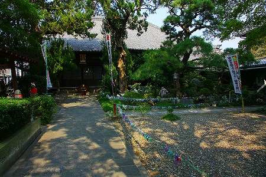

龍台院/愛知県
愛知県半田市にある龍台院は知多四国霊場の二十番札所だ。
半田は古くから醸造業が盛んなところで、街を歩くと黒塀の工場や大きな蔵を目にすることが出来る。
龍台院はそんな半田の市街地にあるお寺だ。
さして広くない境内だが大きな木が密生していて、外から見るとそこだけが森のようだ。
もちろん境内に入れば綺麗に整えられているが、やはり木々のボリュームは圧倒的。

松の木の下にはコンクリの鶴が3羽いた。このコンクリ鶴と極めてよく似たものを名古屋市内の神社でも見かけたことがあったので、もしかしたら量産型なのかもしれない。
市街地のお寺らしく境内には散歩に来る人や巡礼者など様々な人がやってくる。
そんなお寺の本堂脇に観音堂があった。
棟入りの軒先をトタン屋根で延長してあるのだが、その軒下が何やらカラフルじゃないか。
何だかモフモフしているぞ。
近づいてみると無数のビニール紐だった。
さらに近づいてみたら…
五円玉にビニール紐が縛りつけてあったのだ！
赤、緑、黄、青、紫…様々な色のビニール紐が絡み合っい、まるで巨大なタペストリーのよう。
奉納した個々人の思惑を超えたひとつの大きな意思を持つ巨大な生命体のようにすら見えてくるから不思議だ。
一体いかなる理由があって軒下に五円玉が吊るされているのか意味不明だが、そこはいつものことながら勝手に推測しちゃいましょう。
日本の民間信仰では穴の開いたモノ、というのは「ふさがった物が取り除かれる」という現象を象徴している。
例えば耳詰まりを治したいときには穴の開いた自然石を寺社に奉納する。安産祈願は底の抜けた柄杓。
想像するにここの五円玉は単なる賽銭ではなく、穴の開いた小石や底の抜けた柄杓同様、奉納物の一種だと思うんですけど、どうでしょう。
単なる賽銭と差別化を図るためにわざわざビニール紐を結びつけているのではなかろうか。
穴が開いていることで願いが通じますようにとか困難から抜け出せますように、とか。あるいは語感から「御縁」がありますように、とか。な。
ちなみにこのお寺のご詠歌、
千歳ふるつるの林の大悲閣 えんぶだごんの光り輝く
の中にある「えんぶだごん」とは怪獣の名前…ではなくて「閻浮壇金」という想像上の最上級のゴールドのことだそうな。
つまり五円玉をビニール紐で装飾することで極上の金を表現したのかも知れないっすね。
トタン屋根を支えるのにはあまりにも無骨な鉄骨の柱と梁、最初から五円玉を吊り下げるのを想定してあったのだろうか。
中に入ってみる。
千羽鶴や祈願文や写経が折り重なり、たくさんの願いが凝縮されていた。
その中にあった写真。
左の御仁は連続五十年百五十回参拝記念、右の御仁は新四国巡拝二百回記念、とある。
う、ウソ…だろ。
新四国、とはこの龍台院を含む知多四国八十八ヶ所霊場のこと。
約200キロの道のりの霊場を150回だ200回だと回っておられる、というわけだ。
さらにこちらにも新四国霊場二百回巡拝を成し遂げられた方が。
これらの方は皆、講を率いてまわっている先達さんなのだろうがそれにしても凄すぎる。
モンスター級の巡礼者だ！
改めてビニール紐の大群を見る。
ビニール紐ってこんなにカラーバリエーションがあったのかあ…。
あれ？そういえば白い紐が全然ないぞ。地味だから有り難味がない、という奉納者の判断なのだろうか。
大師堂の前には使い込まれた様子の手形足型が。
これで患部をさすりながら拝めば病も平癒するという。
庶民の信仰によって形成された信仰のエッセンスにあふれたお寺であった。
帰りしなに気づいたこと。
庭と参道の仕切りにもビニール紐がたくさん結びつけてありました…。
深いぞ、知多四国霊場。
2011.10.
珍寺大道場 HOME